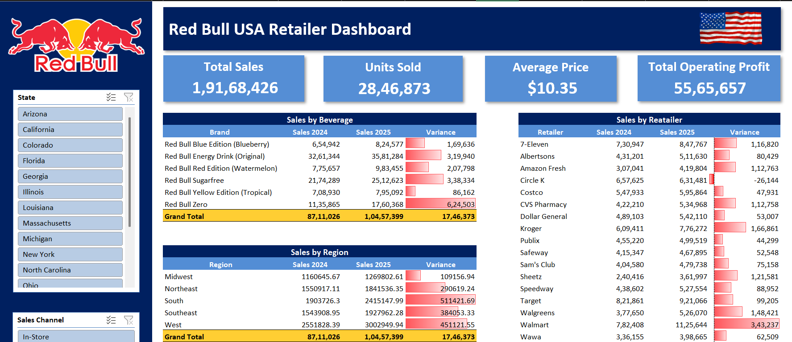
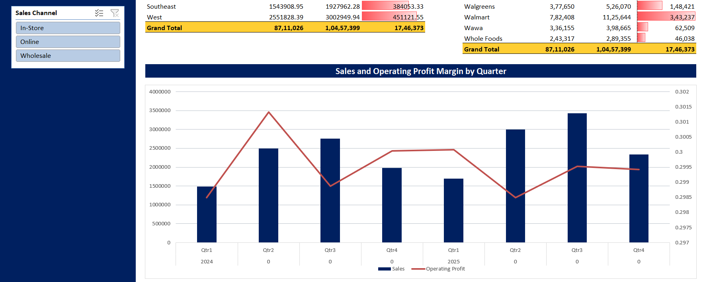

Project 03 / Sales performance
Red Bull Sales Dashboard
Overview
An interactive Excel dashboard that analyses Red Bull sales across US retailers, regions and product lines for 2024 and 2025. It is built with PivotTables, slicers, conditional formatting and a combo chart.
The dashboard answers questions such as:
- How did total sales and operating profit change from 2024 to 2025?
- Which Red Bull products and retailers drive the most revenue and growth?
- Which US regions perform best?
- How do sales and operating margin vary by quarter?
Dataset
The dataset has about 8,300 invoice-level records (2024 to 2025) in the Sales Data sheet.
Key insights
- Total sales were about $19.17M across 2024 and 2025, rising from $8.71M to $10.46M (roughly 20% growth).
- Red Bull Original is the top seller, but Red Bull Zero grew fastest (about 55% year over year).
- The West is the largest region, followed by the South.
- Walmart added the most sales year over year, and Circle K was the only retailer to decline.
- Operating margin stayed steady at about 30%, and sales peaked in Q3.
Tools & skills
Microsoft Excel, PivotTables, slicers, conditional formatting (data bars), combo charts with a dual axis, dashboard design and KPI reporting.
Dashboard previews




Content from the project README on GitHub ↗.